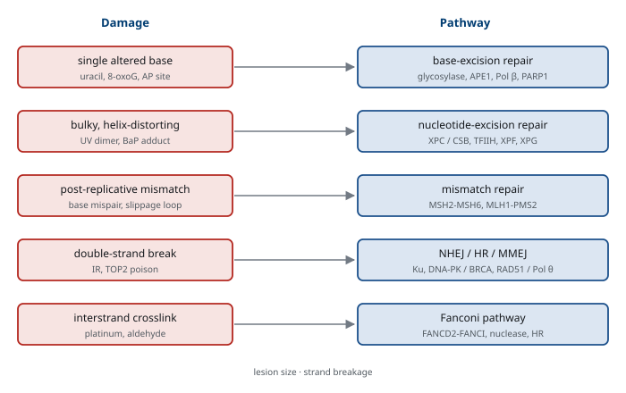
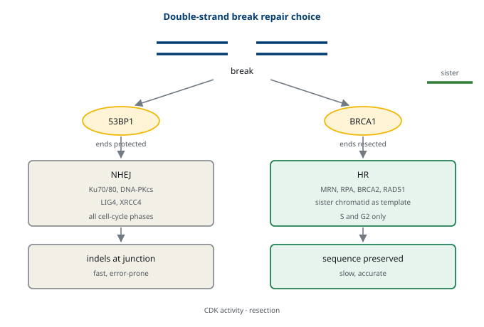

M03-W01-L03 · 분자유전학과 계통별 의학생화학특론
DNA 손상과 복구 경로
DNA Damage and Repair Pathways
학습목표
- DNA 손상을 원인과 화학적 성질로 분류하고 각 손상이 어느 복구 경로로 가는지 연결한다.
- 자발적 손상의 규모를 수치로 제시하고 그것이 복구 기구의 필요를 설명한다.
- Base-excision repair의 단계를 glycosylase에서 결합까지 서술하고 PARP의 역할을 설명한다.
- Nucleotide-excision repair의 두 하위 경로를 구분하고 각 결손이 어느 질환으로 나타나는지 설명한다.
- Mismatch repair의 단계와 가닥 구별 문제를 설명하고 microsatellite instability와 연결한다.
- 이중가닥 절단의 두 복구 경로를 비교하고 그 선택을 정하는 요인을 든다.
- 가닥 간 교차결합과 Fanconi 경로의 작동을 설명한다.
- 손상을 건너뛰는 합성의 기전과 그 대가를 설명한다.
- 손상 반응 신호가 chromatin 안에서 퍼지는 과정을 설명한다.
- 복구 결손을 겨냥하는 치료의 논리와 내성 기전을 설명한다.
선수지식
- M03-W01-L02 DNA 복제의 기전과 효소 — 분기점의 구조, 복제 스트레스와 ATR 축, 정확도의 세 단계
- M03-W01-L01 DNA의 구조와 염색질 포장 — nucleosome, 비표준 구조, 메틸화 자리의 화학
- M01-W06-L03 DNA 복제·복구와 유전체 재배열 — 복구 경로의 개요, 합성 치사의 기본 논리
1. 손상의 규모와 분류
복구를 배우기 전에 손상이 얼마나 흔한지 알아야 한다. 사람의 세포 하나에서 하루에 수만 건의 염기 손상이 자발적으로 일어난다고 추정한다. 외부 요인이 없어도 그렇다. 이 규모가 복구 기구의 존재를 설명한다. 손상은 예외적 사건이 아니라 상시적 조건이다.
자발적 손상의 주요 종류를 든다.
| 손상 | 화학 | 결과 |
|---|---|---|
| 탈퓨린화 | 염기와 당의 결합이 끊어진다 | 염기 없는 자리(AP site)가 남는다 |
| 탈아미노화 | Cytosine이 uracil로, 5-methylcytosine이 thymine으로 | 짝이 바뀌어 변이가 된다 |
| 산화 | Guanine이 8-oxoguanine으로 | 복제 중 thymine과 짝을 이룰 수 있다 |
| 메틸화 | Guanine의 O6 위치 등 | 짝이 바뀌거나 복제가 멈춘다 |
| 단일가닥 절단 | 골격이 끊어진다 | 복제 분기점과 만나면 이중가닥 절단이 된다 |
외부 요인은 성질이 다른 손상을 만든다. 자외선은 이웃한 pyrimidine을 묶어 dimer를 만들고, 이온화 방사선은 단일·이중가닥 절단과 산화 손상을 함께 만들며, 화학물질은 염기에 큰 부가물을 붙이거나 두 가닥을 묶는다.
손상을 경로로 연결하는 틀을 먼저 세운다. 원칙은 단순하다. 손상이 하나의 염기에 국한되면 그 염기만 떼어내고, 나선을 뒤틀 만큼 크면 그 구간을 잘라내며, 가닥이 끊어지면 끊어진 자리를 다시 잇는다. 이 세 묶음이 base-excision repair, nucleotide-excision repair, 그리고 절단 복구에 각각 대응한다.
손상과 변이를 구별하는 것이 이 수업의 첫 개념적 작업이다. 손상은 화학적으로 비정상인 구조이고, 변이는 정상 염기로 이루어졌으나 서열이 달라진 상태다. 손상은 복구 기구가 알아볼 수 있다. 비정상 구조가 표지 역할을 하기 때문이다. 변이는 알아볼 수 없다. 네 염기 가운데 하나로 바뀌어 있을 뿐이므로 무엇이 원래 서열인지 알 단서가 없다.
이 구별에서 복구의 시간 제약이 나온다. 손상은 복제 전에 고쳐야 하고, 복제를 거치면 변이로 고정된다. 복제가 지나가면 두 가닥 모두 정상 염기로 이루어지므로 손상의 표지가 사라진다. Mismatch repair가 복제 직후의 짧은 시간 안에 작동해야 하는 이유, 그리고 세포가 손상이 남아 있을 때 세포주기를 멈추는 이유가 모두 이 제약에서 나온다.
세포가 손상에 대응하는 방식도 세 갈래로 나누어 보아야 한다. 고치는 것, 견디는 것, 그리고 포기하는 것이다. 복구가 고치는 쪽이고, 손상을 그대로 두고 복제를 진행하는 건너뛰기가 견디는 쪽이며, 세포사멸과 노화가 포기하는 쪽이다. 손상의 양과 종류에 따라 세 대응의 비중이 달라진다는 점이 치료 반응을 이해하는 틀이다.
외부 요인이 남기는 손상의 양상도 구별해 두어야 한다. 자외선은 피부의 표면에만 닿고 pyrimidine dimer를 만들며, 이온화 방사선은 조직을 투과해 여러 종류의 손상을 동시에 만든다. 특히 방사선은 짧은 구간에 여러 손상이 모인 복합 손상을 만들고, 그것이 단순한 절단보다 복구하기 어렵다. 양성자와 중입자 치료의 생물학적 효과가 광자와 다른 이유로 이 복합성이 거론된다.
화학물질은 또 다른 양상이다. 담배 연기의 benzo[a]pyrene 대사물처럼 큰 부가물을 만드는 물질은 nucleotide-excision repair로, alkylating agent는 직접 복구와 base-excision repair로 처리된다. 그래서 노출의 종류가 어느 복구 경로에 부담을 주는지를 정한다. M01-W12-L03에서 본 변이 신호가 이 대응 관계의 결과다.
2. 직접 복구
가장 간단한 복구는 손상을 잘라내지 않고 되돌리는 것이다. 사람에게 남아 있는 예가 두 가지다.
첫째는 MGMT다. Guanine의 O6 위치에 붙은 methyl기를 자기 자신으로 옮겨 제거한다. 옮긴 뒤 그 효소는 영구히 비활성화되므로, 한 분자가 한 번만 일한다. 그래서 세포가 가진 MGMT의 양이 그 세포의 내약성을 정한다.
둘째는 ALKBH 계열로, 산화적 탈메틸화 반응으로 특정 알킬 손상을 제거한다. 세균과 식물이 가진 광복구 효소는 사람에게 없다. 자외선 손상을 빛으로 직접 되돌리는 그 효소가 없으므로, 사람은 자외선 손상을 nucleotide-excision repair로 처리해야 한다.
ALKBH 계열의 작동 방식을 조금 더 본다. 이 효소들은 산소와 2-oxoglutarate를 쓰는 반응으로 알킬기를 산화해 떼어내고, 그 과정에서 succinate와 이산화탄소가 나온다. 같은 반응 방식을 쓰는 효소가 유전자 조절에도 쓰인다는 점이 중요하다. DNA와 RNA의 메틸기를 떼는 효소, 그리고 histone의 메틸기를 떼는 효소가 같은 부류에 속한다.
여기서 대사와 복구가 이어진다. 이 반응은 2-oxoglutarate를 요구하므로 TCA 회로의 중간체 농도에 영향을 받고, M01-W12-L03에서 본 IDH 변이가 만드는 대사물이 이 효소들을 방해한다. 즉 대사의 변화가 복구와 후성유전 조절을 동시에 바꿀 수 있다. 이 연결이 M03 후반 계통별 수업의 전제가 된다.
3. Base-excision repair
하나의 염기가 바뀌었거나 떨어진 경우를 처리하는 경로다. 단계가 분명하다.
- 인식과 제거: DNA glycosylase가 잘못된 염기를 찾아 당과의 결합을 끊어 떼어낸다. 그 결과 염기 없는 자리(AP site)가 생긴다.
- 골격 절단: AP endonuclease(APE1)가 그 자리의 골격을 끊는다.
- 정리와 채우기: Pol β가 빈자리에 맞는 nucleotide를 넣는다.
- 결합: Ligase III와 XRCC1이 골격을 잇는다.
Glycosylase는 한 종류가 아니라 손상마다 전담 효소가 있다. Uracil을 떼는 UNG, 8-oxoguanine을 떼는 OGG1, 그리고 산화된 pyrimidine을 떼는 효소들이 있다. 인식의 특이성이 효소의 수로 구현된다는 점이 이 경로의 특징이다.
산화 손상의 처리에는 추가 장치가 있다. 8-oxoguanine이 복제를 거치며 adenine과 짝을 이루면, 다음 복제에서 그 adenine 쪽을 고쳐야 한다. 그 일을 MUTYH가 맡는다. 또 nucleotide 풀에 생긴 산화 산물을 분해해 애초에 들어오지 못하게 하는 효소도 있다. 즉 같은 손상에 대해 들어오기 전, 들어온 직후, 복제 후의 세 겹으로 대응한다.
PARP1의 역할을 여기서 짚는다. PARP1은 단일가닥 절단을 감지해 자신과 주변 단백질에 ADP-ribose 사슬을 붙이고, 그 사슬이 XRCC1 같은 복구 인자를 불러온다. 역할을 끝내면 사슬이 제거되고 PARP1이 DNA에서 떠난다. 이 감지와 적재, 그리고 떠남의 순서가 뒤에서 볼 PARP 억제제의 작용을 이해하는 전제다.

두 하위 경로가 더 있다는 점도 알아 둔다. 빈자리를 채우는 polymerase와 ligase의 조합에 따라 짧은 구간만 교체하는 방식과 긴 구간을 교체하는 방식으로 나뉜다. 짧은 쪽은 Pol β가 한두 염기를 넣고 ligase III가 잇는다. 긴 쪽은 PCNA가 얹히고 Pol δ나 ε가 여러 염기를 넣은 뒤 FEN1이 밀려난 조각을 자르고 ligase I이 잇는다.
긴 쪽이 쓰이는 조건이 임상과 이어진다. AP site의 당 부분이 손상되어 Pol β가 바로 채울 수 없을 때 긴 쪽으로 넘어간다. 즉 같은 경로 안에서도 손상의 세부 구조에 따라 동원되는 효소가 달라진다. 그래서 한 효소의 결손이 모든 base-excision repair를 막는 것이 아니라 특정 손상의 처리만 막으며, 이것이 결손의 표현형이 제한적으로 나타나는 이유다.
MUTYH 결손이 그 예다. 이 효소만 없으면 산화 손상 가운데 특정 짝 어긋남의 처리가 안 되고, 그 결과 대장에 폴립이 다발하는 증후군이 생긴다. 다른 base-excision repair는 정상이므로 전신 양상이 아니라 특정 조직의 종양 소인으로 나타난다. 경로 전체의 결손과 한 효소의 결손은 임상 양상의 폭이 다르다.
4. Nucleotide-excision repair
나선을 뒤틀 만큼 큰 손상은 염기 하나만 떼어내서는 처리할 수 없다. 이 경로는 손상을 포함한 구간을 올리고뉴클레오타이드 단위로 잘라낸다.
단계는 다섯이다. 손상의 인식, 두 가닥의 국소적 풀림, 손상을 포함한 가닥의 양쪽 절단, 24~32 염기 길이 조각의 제거, 그리고 반대 가닥을 주형으로 한 재합성과 결합이다. TFIIH 복합체가 가닥을 풀고, XPF와 XPG가 양쪽을 자른다.
인식 단계가 두 갈래로 나뉜다는 점이 중요하다.
| 하위 경로 | 손상을 찾는 방식 | 대상 |
|---|---|---|
| 전체 유전체 복구 | XPC 등이 뒤틀린 나선을 직접 찾는다 | 유전체 전체 |
| 전사 결합 복구 | 전사 중 RNA polymerase가 손상 앞에서 멈춘 것을 신호로 쓴다 | 전사되는 가닥 |
두 갈래의 구분이 질환을 가른다. 전체 유전체 복구가 망가지면 색소성 건조증(xeroderma pigmentosum)이 된다. 자외선 손상이 쌓여 피부암이 매우 이른 나이에 다발한다. 전사 결합 복구가 망가지면 Cockayne 증후군이 되고, 피부암 위험보다 성장 지연, 신경 퇴행, 조기 노화 양상이 두드러진다.
같은 경로의 결손이 서로 다른 임상 조합을 내는 이유를 한 번 더 정리해 둔다. Nucleotide-excision repair에 관여하는 유전자는 여러 개이고, 각 단백질이 그 경로 외에 다른 일도 맡는다. TFIIH는 전사 개시에도 쓰이고, 일부 인자는 산화 손상의 처리에도 관여한다.
그래서 한 유전자의 변이는 그 단백질이 맡은 모든 일에 영향을 준다. 색소성 건조증과 Cockayne 증후군의 양상이 한 환자에게 겹쳐 나타나는 경우가 있는 것, 그리고 trichothiodystrophy에서 머리카락이 가늘어지는 것처럼 복구와 무관해 보이는 소견이 생기는 것이 이 다기능성 때문이다. 유전자 하나의 결손을 경로 하나의 결손으로 단순화하면 설명되지 않는 소견이 남는다.
5. Mismatch repair
복제의 교정을 통과해 남은 짝 어긋남을 처리하는 경로다. 핵심 문제는 M03-W01-L02에서 짚은 가닥 구별이다. 어긋난 두 염기 가운데 어느 쪽이 틀린 것인지 알아야 하고, 그것은 어느 가닥이 새 가닥인지 아는 문제다.
단계는 네 개다. MSH2–MSH6 또는 MSH2–MSH3가 어긋남을 인식하고, MLH1–PMS2가 와서 결합하며, 새 가닥에 절단을 만들어 그 구간을 제거하고, Pol δ가 다시 합성한 뒤 결합한다. 새 가닥의 단서로는 PCNA의 방향과 lagging 가닥의 틈이 거론된다.
이 경로는 짝 어긋남만 고치는 것이 아니다. 반복 서열에서 생긴 작은 삽입·결실도 처리한다. 복제 중 반복 구간에서 가닥이 미끄러지면 한쪽에 고리가 생기고, 그 고리를 이 경로가 인식해 고친다. 그래서 이 경로가 망가지면 반복 서열의 길이가 세포마다 달라진다. 이 상태를 microsatellite instability(MSI)라 한다.
Lynch 증후군이 이 경로의 생식계열 결손이다. 대장암과 자궁내막암의 위험이 높고, 발병이 이르며, 종양에서 MSI가 관찰된다. 임상 검사는 두 방향으로 한다. 반복 서열의 길이 변화를 직접 보거나, 네 단백질(MLH1, MSH2, MSH6, PMS2)의 발현을 면역조직화학으로 본다.
전사 결합 복구의 신호가 무엇인지 조금 더 본다. 전사 중 RNA polymerase가 손상 앞에서 멈추면 그 멈춘 복합체 자체가 신호가 된다. CSB가 멈춘 복합체를 인식하고 복구 인자를 불러온다. 복구가 끝나면 멈춘 polymerase를 치우거나 되돌려 전사를 다시 시작한다.
이 설계가 효율적인 이유가 있다. 유전체 전체를 훑어 손상을 찾는 일은 비용이 크지만, 전사되는 구간은 어차피 polymerase가 지나가므로 그 지나감 자체를 탐색으로 쓸 수 있다. 그래서 전사가 활발한 구간의 손상이 더 빠르게 복구되고, 전사되지 않는 가닥보다 전사되는 가닥의 손상이 먼저 처리된다. 종양 유전체에서 두 가닥의 변이 빈도가 다르게 나타나는 현상이 이 비대칭으로 설명된다.
여기서 수업 전체에 걸친 원칙이 하나 더 나온다. 복구는 유전체를 균일하게 지키지 않는다. 전사되는 구간, 이르게 복제되는 구간, 접근 가능한 구간이 더 잘 지켜진다. 그래서 변이는 유전체에 고르게 쌓이지 않으며, M03-W01-L02에서 본 복제 시기와 변이 밀도의 상관이 복구 쪽에서도 같은 방향으로 나타난다.
가닥 구별이 왜 어려운지 한 번 더 짚는다. 세균은 새 가닥이 아직 메틸화되지 않았다는 점을 쓴다. 사람에게는 그 표지가 없으므로 다른 단서를 써야 하고, 그 단서는 복제가 끝난 직후에만 남아 있다. 그래서 이 경로는 시간 창이 좁다. 복제 뒤 chromatin이 재조립되고 틈이 메워지면 단서가 사라진다.
이 좁은 창이 임상적 결과를 만든다. 복제가 빠른 조직에서 이 경로의 부담이 크고, 결손이 생겼을 때 그 조직에서 먼저 변이가 쌓인다. Lynch 증후군에서 대장과 자궁내막이 먼저 문제가 되는 이유를 이 조직 교체 속도로 설명한다. 보편적 기구의 결손이 그 기구를 가장 많이 쓰는 조직에서 드러난다는 원칙의 또 하나의 사례다.
경로의 또 다른 역할도 있다. Mismatch repair 인자는 짝이 어긋난 서열끼리 재조합하는 것을 막는 일도 한다. 비슷하지만 같지 않은 서열이 짝을 이루면 재배열이 생기는데, 이 인자들이 그런 짝을 인식해 재조합을 중단시킨다. 그래서 이 경로가 망가지면 반복 서열 사이의 재배열도 늘어난다.
6. 이중가닥 절단: 두 경로의 선택
두 가닥이 모두 끊어지면 주형이 될 가닥이 그 자리에 없다. 그래서 복구 방식이 근본적으로 다르다. 두 경로를 비교한다.
| 항목 | 비상동 말단 연결(NHEJ) | 상동 재조합(HR) |
|---|---|---|
| 주형 | 쓰지 않는다 | 자매 염색체를 쓴다 |
| 정확도 | 짧은 삽입·결실이 남을 수 있다 | 서열을 보존한다 |
| 쓸 수 있는 시기 | 세포주기 전체 | S기와 G2기 |
| 핵심 인자 | Ku70/80, DNA-PKcs, LIG4, XRCC4 | BRCA1, BRCA2, RAD51, MRN |
| 속도 | 빠르다 | 느리다 |
선택을 정하는 요인이 세 가지다. 첫째, 세포주기다. 자매 염색체가 있어야 상동 재조합이 가능하므로 복제 후에만 쓸 수 있다. 둘째, CDK 활성이다. 상동 재조합에 필요한 인자가 인산화로 활성화되므로 CDK가 높은 시기에 유리하다. 셋째, 말단의 처리 방식이다. 말단이 짧게 깎여 단일가닥 꼬리가 생기면 상동 재조합으로, 그대로 보호되면 말단 연결로 간다.
이 선택을 두 단백질의 경쟁으로 설명한다. 53BP1과 그 하류 인자는 말단이 깎이지 않게 막아 말단 연결 쪽으로 밀고, BRCA1은 그 보호를 걷어 깎임을 허용해 상동 재조합 쪽으로 민다. 두 힘의 균형이 경로를 정한다.
상동 재조합의 단계도 정리한다. MRN 복합체가 말단을 인식하고 깎아 단일가닥 꼬리를 만들고, RPA가 그 꼬리를 덮는다. BRCA2가 RPA를 RAD51로 바꾸어 끼워 넣고, RAD51이 덮인 가닥이 자매 염색체에서 같은 서열을 찾아 침입한다. 그 뒤 합성과 해소를 거쳐 서열이 복원된다.

상동 재조합의 마지막 단계도 두 갈래로 나뉜다. 침입한 가닥이 합성을 거친 뒤 교차 구조를 만들고 그것을 해소하는 방식과, 침입한 가닥이 떨어져 나와 원래 자리로 돌아가 짝을 이루는 방식이 있다. 후자를 synthesis-dependent strand annealing이라 하며, 체세포에서 더 흔하다고 본다.
이 구분이 중요한 이유는 결과가 다르기 때문이다. 교차를 만들어 해소하면 자매 염색체 사이에 서열 교환이 남을 수 있고, 떨어져 나오는 방식에서는 교환이 생기지 않는다. 자매 교환의 빈도를 보는 검사가 Bloom 증후군의 진단에 쓰이는 이유가 여기에 있다. BLM helicase가 교차 구조를 해소하는 일을 맡으므로, 그 결손에서 교환이 크게 늘어난다.
MSI와 종양 변이 부담을 구별해 두어야 한다. 둘 다 변이가 많다는 뜻이지만 측정하는 것이 다르다. MSI는 반복 서열의 길이 변화를, 변이 부담은 암호화 영역의 변이 수를 센다. Mismatch repair 결손 종양은 두 지표가 모두 높지만, 흡연 관련 폐암처럼 변이 부담은 높고 MSI는 없는 종양도 있다.
치료 결정에서 이 구분이 실제로 쓰인다. 두 지표 모두 면역관문 억제제의 반응과 연관되지만 각각 별도의 승인 근거가 되었고, 측정 방법과 판정 기준도 다르다. "변이가 많다"는 서술을 한 지표로 뭉치지 않는 것이 결과 해석의 출발점이다.
7. 미세상동과 다른 말단 연결
말단 연결에도 변형이 있다. 양쪽 말단에 몇 염기의 짧은 공통 서열이 있으면 그 서열을 맞춰 붙이는 방식이 쓰이며, 이를 미세상동 말단 연결이라 한다. Pol θ가 이 경로의 중심이고, 결과적으로 그 사이 구간이 결실된다.
이 경로가 임상에서 주목받은 이유가 두 가지다. 첫째, 유전체 편집에서 생긴 절단이 이 방식으로 붙으면 예측 가능한 결실이 생기므로 편집 결과의 해석에 필요하다. 둘째, 상동 재조합이 망가진 세포가 이 경로에 더 의존하므로 Pol θ가 합성 치사의 표적이 된다. BRCA 결손 종양에서 Pol θ 억제제를 시험하는 근거가 이것이다.
단일가닥 수준의 또 하나의 처리 방식도 알아 둔다. 복제 분기점이 손상을 만나면 그 자리를 건너뛰고 뒤에 틈을 남길 수 있다. 그 틈은 나중에 상동 재조합이나 손상 건너뛰기 합성으로 메워진다. 이 처리를 복제 후 복구라 하며, 손상의 처리가 복제와 같은 시점에 일어나지 않아도 된다는 점을 보여 준다.
말단 연결의 단계도 정리한다. Ku70/80이 끊어진 말단에 먼저 붙어 분해를 막고, DNA-PKcs가 와서 두 말단을 가까이 붙잡는다. 말단이 깔끔하지 않으면 다듬는 효소가 작동하고, 마지막에 LIG4–XRCC4가 잇는다. 다듬는 과정에서 몇 염기가 사라지거나 더해질 수 있으므로 결과가 완전히 정확하지 않다.
그런데 이 부정확함이 때로는 필요하다. 면역글로불린과 T세포 수용체의 재배열에서는 의도적으로 절단을 만들고 말단 연결로 붙이며, 그 과정의 부정확함이 다양성을 늘린다. 같은 성질이 체세포에서는 결함이고 면역계에서는 자원이 된다. 그래서 LIG4나 DNA-PKcs의 결손은 방사선 과민과 면역 결핍을 함께 만든다.
경로 선택의 결과가 유전체 편집에서 그대로 드러난다는 점도 중요하다. 절단을 만들고 주형을 함께 넣어 원하는 서열로 바꾸려면 상동 재조합이 쓰여야 하는데, 세포주기에 따라 그 경로를 쓸 수 없는 세포가 많다. 그래서 편집의 효율이 세포 종류와 상태에 따라 크게 다르고, 말단 연결로 붙으면 의도하지 않은 삽입·결실이 남는다. M03-W06-L02에서 이 문제를 편집 기술의 설계와 함께 다룬다.
단일가닥 절단의 처리를 따로 보아야 한다. 이중가닥 절단보다 훨씬 흔하고, 대부분 base-excision repair의 중간 단계에서 생긴다. 처리는 PARP1이 감지하고 XRCC1이 복구 인자를 모아 빈자리를 메우는 방식으로 이루어진다.
이 경로의 결손이 신경 질환으로 나타난다는 점이 중요하다. XRCC1이나 그 관련 인자의 결손은 소뇌 위축과 운동 이상으로 나타나고, topoisomerase I이 붙은 채 남은 말단을 처리하는 효소(TDP1)의 결손도 비슷한 양상을 낸다. 이유는 두 가지로 설명된다. 신경세포는 분열하지 않아 상동 재조합을 쓸 수 없고, 산소 소비가 많아 산화 손상이 많다. 분열하지 않는 조직에서는 단일가닥 절단의 처리가 생존에 더 중요해진다.
8. 가닥 간 교차결합과 Fanconi 경로
두 가닥을 서로 묶어 버리는 손상이 가장 까다롭다. 두 가닥이 분리되지 않으므로 복제와 전사가 모두 막히고, 어느 가닥도 주형으로 쓸 수 없다. 백금계 약물과 mitomycin C, 그리고 체내에서 생긴 aldehyde가 이런 손상을 만든다.
처리는 여러 경로를 이어 붙여 진행한다. 복제 분기점이 교차결합에 부딪히면 그 자리를 인식하는 복합체가 와서 Fanconi 경로의 핵심 단백질 두 개(FANCD2–FANCI)에 ubiquitin을 붙인다. 그 표지가 핵산 분해 효소를 불러 한쪽 가닥을 끊어 교차결합을 떼어내고, 남은 이중가닥 절단은 상동 재조합으로 복구한다. 즉 하나의 손상을 처리하는 데 절단 복구와 손상 건너뛰기가 함께 동원된다.
이 경로의 결손이 Fanconi 빈혈이다. 양상은 세 묶음으로 나타난다. 골수 부전, 발달 이상(저신장, 엄지와 전완의 기형, 신장 이상 등), 그리고 종양 위험의 증가(특히 급성 골수성 백혈병과 두경부암)다. 진단에서는 세포를 교차결합 유발 물질에 노출시켜 염색체 절단이 늘어나는지를 본다.
가닥 간 교차결합 처리의 또 다른 경로도 알아 둔다. 복제와 무관하게, 즉 복제 분기점이 오지 않아도 교차결합을 제거하는 방식이 있다는 자료가 쌓였다. 특정 핵산 분해 효소와 nucleotide-excision repair 인자가 그 일에 관여한다고 본다. 분열하지 않는 세포에서도 교차결합이 처리되어야 하므로 이 경로가 필요하다.
Fanconi 경로의 구성 유전자가 많다는 점도 임상에서 중요하다. 스무 개가 넘는 유전자가 알려져 있고, 대부분 열성으로 전달되지만 하나는 X 염색체 연관이다. 그리고 그 가운데 *BRCA2*와 *BRCA1*이 포함된다. 즉 Fanconi 빈혈의 일부 유전자가 유방·난소암 소인 유전자와 같다. 한쪽 대립형질의 변이는 종양 소인으로, 양쪽 변이는 Fanconi 빈혈로 나타난다는 구도이며, 유전 상담에서 반드시 설명해야 하는 지점이다.
단일가닥 소실 복구라는 또 하나의 방식도 있다. 절단의 양쪽에 같은 반복 서열이 있으면 그 서열끼리 짝을 맞춰 붙이고 사이 구간을 잘라낸다. 반복이 많은 유전체에서 이 방식이 쓰이면 큰 결실이 생기므로, 세포는 가능하면 이 경로를 쓰지 않도록 억제한다.
세 가지 말단 연결 방식을 정확도 순으로 정리하면 상동 재조합, 비상동 말단 연결, 미세상동 말단 연결과 단일가닥 소실 복구의 순이다. 정확도가 낮은 경로일수록 쓰임이 제한되고, 제한이 풀리는 조건이 곧 유전체 재배열이 일어나는 조건이다. 종양에서 큰 결실과 전좌가 많은 것은 그 제한이 여러 겹으로 풀린 결과다.
9. 손상을 건너뛰는 합성
복제 분기점이 손상 앞에서 멈췄을 때, 그 손상을 지나가는 방법이 손상 건너뛰기 합성이다. M03-W01-L02에서 본 Y family polymerase가 이 일을 한다.
전환의 신호는 PCNA의 수식이다. 멈춘 분기점에서 PCNA에 ubiquitin이 하나 붙으면 그 표지를 읽는 polymerase가 와서 손상 자리를 지나간다. 그 뒤 다시 정확한 polymerase로 교체된다. 쓰는 자리와 시간을 제한하는 장치가 있어야 변이율이 올라가지 않는다.
이 경로의 성질을 정확히 표현해야 한다. 이것은 복구가 아니다. 손상은 그대로 남고 복제만 진행된다. 그래서 결과적으로 변이가 생길 수 있고, 손상 자체는 뒤에 다른 경로가 처리해야 한다. 그럼에도 이 경로가 필요한 이유는 멈춘 분기점이 무너지는 것보다 변이 하나가 덜 위험하기 때문이다. 세포는 정확성과 생존 사이에서 생존을 고른다.
색소성 건조증 변이형(XP-V)이 이 경로의 결손이다. Pol η의 기능이 없어 자외선 손상을 지나가지 못하고, 다른 polymerase가 더 큰 오류를 남겨 피부암 위험이 올라간다. 복구 경로가 아닌 건너뛰기 경로의 결손도 같은 임상 양상을 낼 수 있다는 점이 이 질환의 교훈이다.
Aldehyde의 역할을 따로 보아야 한다. 체내에서 대사 과정에 생기는 formaldehyde와 acetaldehyde가 가닥 간 교차결합을 만들 수 있다. 그래서 Fanconi 경로는 외부 약물이 없어도 상시적으로 일할 거리가 있다.
여기서 유전적 배경의 차이가 나타난다. Acetaldehyde를 분해하는 효소의 활성이 낮은 사람이 있고, 그런 변이는 동아시아 인구에서 상대적으로 흔하다. 이 변이와 Fanconi 경로의 결손이 겹치면 증상이 더 심하다는 관찰이 보고되었다. 그래서 대사 쪽 유전 배경이 복구 쪽 질환의 중증도를 바꾼다는 관점이 필요하며, 이 축은 M03 후반의 계통별 수업에서 다시 등장한다.
손상 건너뛰기에도 두 방식이 있다. 하나는 손상 자리에 직접 염기를 넣고 지나가는 방식이고, 다른 하나는 자매 가닥의 정보를 임시로 빌려 쓰는 방식이다. 후자는 재조합을 쓰므로 정확하지만 느리고, 전자는 빠르지만 변이를 남긴다. 세포는 상황에 따라 둘 사이를 고르며, 그 선택이 변이율을 정한다. 빠름과 정확함 사이의 선택이 복구의 모든 단계에서 되풀이된다. 그래서 어느 경로가 쓰였는지는 결과에 남은 흔적으로 역추적할 수 있고, 종양 유전체의 변이 양상을 읽어 어느 선택이 반복되었는지를 추정한다. 이 역추적이 M01-W06-L03에서 본 변이 신호 분석의 기전적 근거다.
10. 신호가 chromatin 안에서 퍼지는 과정
손상은 맨 DNA가 아니라 chromatin 안에서 일어난다. 그래서 복구에는 찾고, 열고, 고치고, 되돌리는 네 단계가 모두 필요하다.
이중가닥 절단에서 그 과정이 가장 잘 밝혀져 있다. MRN 복합체가 절단을 인식해 ATM을 활성화하고, ATM이 주변 nucleosome의 H2A.X를 인산화한다. 이 표지를 γH2AX라 하며, 절단 자리 주변 수십 킬로베이스에 걸쳐 퍼진다. 그 표지를 MDC1이 읽고, 다시 ubiquitin 표지가 쌓여 53BP1과 BRCA1이 모인다.
이 증폭 구조가 두 가지를 설명한다. 첫째, 하나의 절단이 큰 신호가 된다. 표지가 넓게 퍼져 많은 복구 인자를 모을 수 있다. 둘째, 그 표지를 영상으로 볼 수 있다. γH2AX의 점을 세어 손상의 양을 측정하는 방법이 연구와 일부 임상 시험에서 쓰인다.
되돌리는 단계도 필요하다. 복구가 끝나면 표지를 지우고 nucleosome을 원래 상태로 돌려야 한다. 그 과정이 늦으면 손상이 해결된 뒤에도 신호가 남아 세포주기가 계속 멈춰 있게 된다. 신호를 켜는 기구와 끄는 기구가 모두 있어야 한다는 점이 이 축의 설계다.
표지의 또 다른 쓰임이 방사선 생물학이다. 조사량에 따라 γH2AX 점의 수가 늘고 시간이 지나면서 줄어드므로, 그 감소 속도로 복구 능력을 추정한다. 환자의 혈액 세포로 이 측정을 해 방사선 과민성을 미리 가려내려는 시도가 있었다.
다만 해석에 주의가 필요하다. 점의 수는 절단의 수를 그대로 반영하지 않는다. 가까운 두 절단이 하나의 점으로 보이고, 복구가 끝난 뒤에도 표지가 남을 수 있다. 또 손상이 전혀 없어도 복제 중 세포에서는 점이 관찰된다. 표지의 존재와 손상의 존재를 같은 것으로 읽지 않는다는 원칙이 여기서도 적용된다.
표지가 전사에 미치는 영향도 고려해야 한다. 손상 자리 주변의 전사는 일시적으로 꺼진다. ATM 신호와 ubiquitin 표지가 그 구간의 전사를 억제하며, 복구가 끝나면 다시 켜진다. 이 억제가 필요한 이유는 손상된 주형에서 전사가 계속되면 잘못된 전사물이 만들어지고 전사 기구가 손상 자리에 끼어 복구를 방해하기 때문이다.
그런데 이 억제가 완전하지 않다. 손상이 많으면 전사 억제가 넓게 퍼져 필요한 유전자의 발현까지 줄어든다. 방사선이나 항암제를 쓴 뒤 세포의 전반적 기능이 떨어지는 현상의 한 부분이 이것으로 설명된다. 복구를 위한 조치 자체가 비용을 수반한다는 점이 손상 반응의 특징이다.
11. 손상 반응의 전신 결과
손상 반응은 그 세포 안에서 끝나지 않는다. 세 가지 결과가 세포 밖으로 나간다.
첫째, 세포주기의 정지다. ATM과 ATR이 켜지면 p53이 안정화되고 CDK 억제 인자가 늘어 주기가 멈춘다. 손상이 과하면 그 정지가 영구화되어 노화 상태가 된다. M01-W12-L01과 M01-W12-L02에서 본 그 경로가 손상 쪽에서 시작된다.
둘째, 염증 신호다. 처리되지 않은 핵산 조각이 세포질로 나오면 cGAS가 감지해 STING을 거쳐 인터페론 반응을 일으킨다. 분열 중 염색체가 제대로 분배되지 않아 생긴 작은 핵(micronucleus)이 그 조각의 주요 공급원이라는 결과가 보고되었다. 그래서 유전체 불안정성이 곧 염증의 원천이 된다.
셋째, 면역 인식의 변화다. 변이가 늘면 신생항원이 늘고, 손상 반응이 세포 표면의 분자 배치를 바꾸어 면역세포의 표적이 되기 쉬워진다. 이 축이 복구 표적 치료와 면역치료를 함께 쓰는 설계의 근거다.
세 결과가 질환의 양면을 만든다. 노화 세포가 분비하는 염증 물질은 조직 기능을 떨어뜨리지만 종양 억제에 기여하고, 인터페론 반응은 감염 방어에 필요하지만 과하면 자가 면역이 된다. 같은 반응이 지키기도 하고 해치기도 한다는 점이 손상 반응을 치료 표적으로 삼기 어려운 이유다.
표지를 지우는 단계가 치료와 이어지는 지점도 있다. 복구가 끝난 뒤 γH2AX와 ubiquitin 표지를 제거하는 효소가 따로 있고, 그 효소를 막으면 신호가 지워지지 않아 세포주기가 계속 멈춘다. 이 성질을 이용해 손상 반응을 길게 유지하려는 시도가 있었다.
반대 방향의 문제도 있다. 표지가 너무 빨리 지워지면 복구 인자가 충분히 모이지 못한다. 그래서 켜는 기구와 끄는 기구의 균형이 복구의 효율을 정하며, 어느 한쪽만 바꾸는 것이 반드시 유리하지 않다. 신호의 세기가 아니라 지속 시간이 결과를 정한다는 관점이 이 축의 연구에서 반복해 나온다.
복구 경로가 chromatin을 되돌리는 방식도 정리해 둔다. 손상 자리에서는 nucleosome을 떼어내 복구 인자가 접근하게 하고, 복구가 끝나면 다시 얹어야 한다. 이때 새로 합성한 histone이 쓰이므로, 복구가 끝난 자리의 수식 양상이 원래와 달라질 수 있다.
이 현상이 노화와 이어진다는 가설이 제시되었다. 손상이 반복되면 그 자리의 수식 양상이 조금씩 흐려지고, 그 누적이 세포의 정체성 약화로 나타난다는 설명이다. 동물 실험에서 손상을 반복해 준 뒤 수식 양상의 변화와 노화 표현형이 함께 나타났다는 결과가 보고되었다. 다만 인과를 확정하기는 어렵고, 손상 자체와 손상 처리의 부작용을 구별하는 것이 이 가설의 검증 과제로 남아 있다.
12. 복구 결손을 겨냥하는 치료
복구 결손은 종양의 약점이 된다. 논리를 단계로 정리한다.
- 종양이 하나의 복구 경로를 잃었다.
- 그 종양은 남은 경로에 더 의존한다.
- 남은 경로를 막으면 종양만 죽는다. 정상 세포는 잃은 경로가 있으므로 견딘다.
PARP 억제제가 이 논리의 대표 예다. 상동 재조합이 망가진 종양(BRCA1·BRCA2 변이 등)에서 PARP를 막으면 단일가닥 절단의 처리가 느려지고, 그 절단이 복제 분기점과 만나 이중가닥 절단이 된다. 상동 재조합이 없으므로 그 절단을 고칠 수 없어 세포가 죽는다.
작용 기전을 조금 더 정확히 보아야 한다. PARP 억제제는 단순히 활성만 막는 것이 아니라 PARP1을 DNA에 붙잡아 둔다. 붙잡힌 PARP1이 복제의 장애물이 되므로, 효과의 상당 부분이 이 붙잡힘에서 온다고 설명한다. 그래서 PARP1을 아예 없앤 세포와 억제제를 쓴 세포의 표현형이 다르다.
| 치료 | 겨냥하는 결손 | 기전 |
|---|---|---|
| PARP 억제제 | 상동 재조합 결손 | 단일가닥 절단의 축적과 PARP1의 붙잡힘 |
| 백금계 약물 | 상동 재조합·Fanconi 결손 | 가닥 간 교차결합 |
| 면역관문 억제제 | Mismatch repair 결손 | 변이 부담과 신생항원의 증가 |
| ATR·WEE1 억제제 | ATM·p53 결손, 복제 스트레스 | 보호와 검문지점의 제거 |
| Pol θ 억제제(개발 중) | 상동 재조합 결손 | 대체 말단 연결의 차단 |
내성 기전도 함께 본다. 네 묶음으로 정리된다. 첫째, 상동 재조합 기능의 회복이다. 변이가 되돌아가거나 틀이 다시 맞아 기능이 살아난다. 둘째, 보호 쪽 인자의 추가 상실이다. 53BP1이 함께 없어지면 BRCA1이 없어도 말단 깎임이 일어나 재조합이 일부 회복된다. 셋째, 분기점 보호의 회복이다. 넷째, 약물의 배출 증가다.
합성 치사를 넓히려는 시도의 현황도 정리해 둔다. PARP 억제제의 성공 이후 같은 논리를 다른 경로에 적용하려는 연구가 이어졌고, 몇 가지 짝이 제시되었다. ATM 결손과 ATR 억제, mismatch repair 결손과 특정 polymerase 억제, 그리고 상동 재조합 결손과 Pol θ 억제가 그 예다.
실제 임상으로 이어진 것은 아직 적다. 이유가 세 가지로 정리된다. 첫째, 세포주 실험에서 보인 치사가 사람의 종양에서 재현되지 않는 경우가 많다. 둘째, 결손을 정확히 가려내는 검사가 부족하다. 셋째, 치료 중 결손이 보완되어 내성이 생긴다. 합성 치사는 원리가 분명한 만큼 조건에 민감하다는 점이 이 분야의 현실이며, 원리의 타당함과 임상 적용의 성공을 구별해 평가해야 한다.
13. 복구 결손 질환의 공통 양상
복구 경로의 결손은 몇 가지 정해진 조합으로 나타난다.
| 질환 | 결손 경로 | 주된 양상 |
|---|---|---|
| 색소성 건조증 | Nucleotide-excision repair(전체 유전체) | 자외선 과민, 이른 피부암 다발 |
| Cockayne 증후군 | Nucleotide-excision repair(전사 결합) | 성장 지연, 신경 퇴행, 조기 노화 |
| Lynch 증후군 | Mismatch repair | 이른 대장암·자궁내막암, MSI |
| Fanconi 빈혈 | 가닥 간 교차결합 처리 | 골수 부전, 발달 이상, 백혈병 |
| Ataxia-telangiectasia | ATM | 소뇌 퇴행, 모세혈관 확장, 면역 결핍, 림프종 |
| Nijmegen breakage | NBS1(MRN) | 작은 머리, 면역 결핍, 림프종 |
| Bloom 증후군 | BLM helicase | 저신장, 햇빛 과민, 다양한 종양 |
| BRCA1·BRCA2 소인 | 상동 재조합 | 유방·난소·전립선·췌장암 |
이 표에서 읽을 원칙이 세 가지다. 첫째, 종양 위험과 신경 퇴행이 함께 나타나는 경우가 많다. 분열하는 세포에서는 변이가 쌓여 종양이 되고, 분열하지 않는 신경세포에서는 손상이 쌓여 세포가 죽는다. 같은 결손이 조직에 따라 다른 결과를 낸다.
둘째, 면역 결핍이 자주 함께 온다. 면역글로불린과 T세포 수용체의 재배열이 의도적인 이중가닥 절단을 만들고 그것을 복구해 완성되므로, 절단 복구가 망가지면 그 과정이 실패한다. M01-W06-L03에서 본 프로그램된 재배열이 복구 기구에 의존한다는 사실이 여기서 임상으로 나타난다.
셋째, 진단에 기능 검사가 쓰인다. 세포에 손상을 준 뒤 염색체 절단, 자매 교환, 생존율을 보는 검사가 유전자 검사와 함께 쓰인다. 서열에서 의미가 불확실한 변이가 나왔을 때 기능 검사가 판정을 돕는다.
이 수업의 내용이 실험 설계로 번역되는 자리도 짚는다. 유전체 편집의 결과를 예측하려면 어느 복구 경로가 쓰일지를 알아야 하고, 그것은 세포주기와 경로 인자의 상태에 달려 있다. 또 세포독성 약물의 민감도를 비교하는 실험에서는 세포주마다 복구 능력이 다르므로, 같은 약에 대한 반응 차이를 약의 성질로만 해석하면 안 된다.
그래서 복구를 다루는 실험에서는 대조를 어디에 두는지가 결론을 정한다. 경로 하나를 없앤 세포와 정상 세포를 비교하거나, 같은 세포에서 억제제를 쓰고 쓰지 않은 조건을 비교한다. 두 방식의 결과가 다를 수 있다는 점은 PARP에서 이미 보았다. 유전적 제거와 약물 억제가 같은 표현형을 내지 않는다는 사실이 이 분야의 중요한 교훈이다.
14. 연결
복구는 M03 전반의 축이고 종양 쪽 수업과 직접 이어진다.
- M03-W02-L01 복구 결함 질환과 유전체 불안정성 — 이 수업의 질환들을 유전체 불안정성의 틀에서 더 자세히 다룬다.
- M03-W01-L02 DNA 복제의 기전과 효소 — 분기점 보호, ATR 축, 손상 건너뛰기의 전환을 다룬다.
- M03-W01-L01 DNA의 구조와 염색질 포장 — 메틸화 자리의 화학, 비표준 구조, nucleosome의 구조를 다룬다.
- M01-W06-L03 DNA 복제·복구와 유전체 재배열 — 복구 경로의 개요와 프로그램된 재배열을 다룬다.
- M01-W12-L01 세포주기와 그 조절 — 손상 반응이 검문지점으로 번역되는 과정을 다룬다.
- M01-W12-L03 암의 세포생물학 — 변이 신호, 합성 치사, 면역치료의 표지를 종양의 틀에서 다룬다.
- M03-W06-L02 유전자 치료와 유전체 편집 — 편집 결과가 어느 복구 경로로 결정되는지를 다룬다.
- M03-W13-L03 대사를 표적으로 하는 항암 치료와 내성 — 복구 표적 치료의 내성 관리를 다룬다.
확인 문항
복구 기구가 상시적으로 필요한 이유를 수치로 설명하라.
해설
외부 요인이 없어도 세포 하나에서 하루 수만 건의 염기 손상이 자발적으로 일어난다고 추정된다. 손상은 예외적 사건이 아니라 상시적 조건이다.
복구 경로의 선택을 정하는 두 가지 기준은?
해설
손상의 화학적 크기(염기 하나인지 나선을 뒤틀 만큼 큰지)와 가닥의 끊어짐 유무다.
MGMT 한 분자가 한 번만 일하는 이유와 그 임상적 결과는?
해설
Methyl기를 자기 자신으로 옮긴 뒤 영구히 비활성화되기 때문이다. 그래서 세포가 가진 MGMT의 양이 temozolomide 내약성을 정하고, promoter가 메틸화된 종양에서 그 약의 효과가 크다.
Base-excision repair에서 glycosylase가 여러 종류인 이유는?
해설
인식의 특이성이 효소의 수로 구현된다. Uracil은 UNG, 8-oxoguanine은 OGG1처럼 손상마다 전담 효소가 있다.
산화 손상에 대해 세포가 세 겹으로 대응한다는 말의 의미는?
해설
Nucleotide 풀의 산화 산물을 미리 분해하고(들어오기 전), 생긴 8-oxoguanine을 OGG1이 떼어내고(직후), 복제 후 잘못 짝지어진 adenine 쪽을 MUTYH가 고친다(복제 후).
PARP1이 단일가닥 절단에서 하는 일을 순서로 설명하라.
해설
절단을 감지해 자신과 주변 단백질에 ADP-ribose 사슬을 붙이고, 그 사슬이 XRCC1 등을 불러온다. 역할이 끝나면 사슬이 제거되고 DNA에서 떠난다.
색소성 건조증과 Cockayne 증후군이 같은 경로의 결손인데 임상 양상이 갈리는 이유는?
해설
전체 유전체 복구의 결손은 손상이 쌓여 변이가 되므로 암으로, 전사 결합 복구의 결손은 전사가 막혀 세포가 죽으므로 조직 퇴행으로 나타난다.
Mismatch repair가 반복 서열의 길이 변화도 고치는 이유는?
해설
복제 중 반복 구간에서 가닥이 미끄러지면 한쪽에 고리가 생기고, 이 경로가 그 고리를 인식해 처리한다. 그래서 결손 시 microsatellite instability가 나타난다.
MSI가 있는 대장암에서 유전성과 산발성을 구별하는 단서를 하나 들라.
해설
산발성에서는 MLH1의 promoter 메틸화로 발현이 꺼진 경우가 많고 BRAF V600E가 함께 있는 경우가 흔하다.
면역조직화학에서 MLH1과 PMS2가 함께 사라진 것과 PMS2만 사라진 것의 해석 차이는?
해설
MLH1이 없으면 짝인 PMS2도 불안정해져 함께 사라진다. PMS2만 사라졌다면 PMS2 자체의 변이를 가리킨다.
상동 재조합이 S기와 G2기에만 쓰일 수 있는 이유는?
해설
주형으로 쓸 자매 염색체가 복제 후에만 존재하기 때문이다. 또 필요한 인자가 CDK 인산화로 활성화되므로 CDK가 높은 시기에 유리하다.
53BP1과 BRCA1이 경로 선택에서 각각 어느 쪽으로 미는가?
해설
53BP1은 말단이 깎이지 않게 막아 비상동 말단 연결 쪽으로, BRCA1은 그 보호를 걷어 깎임을 허용해 상동 재조합 쪽으로 민다.
미세상동 말단 연결이 치료 표적으로 주목받는 이유는?
해설
상동 재조합이 망가진 세포가 이 경로에 더 의존하므로, 중심 효소인 Pol θ를 막으면 합성 치사가 된다.
가닥 간 교차결합이 다른 손상보다 처리하기 어려운 이유는?
해설
두 가닥이 서로 묶여 분리되지 않으므로 복제와 전사가 모두 막히고, 어느 가닥도 주형으로 쓸 수 없다.
Fanconi 빈혈이 진단되면 치료에서 무엇을 조정해야 하는가?
해설
교차결합을 만드는 항암제와 방사선에 과민하므로 이식 전 처치의 용량을 크게 줄여야 한다. 표준 용량으로 치료하면 중대한 독성이 생긴다.
손상 건너뛰기 합성을 "복구가 아니다"라고 하는 이유는?
해설
손상은 그대로 남고 복제만 진행되기 때문이다. 결과적으로 변이가 생길 수 있고 손상 자체는 다른 경로가 처리해야 한다.
γH2AX 표지가 절단 자리 주변으로 넓게 퍼지는 것이 어떤 이점을 주는가?
해설
하나의 절단이 큰 신호로 증폭되어 많은 복구 인자를 모을 수 있다. 또 그 표지를 영상으로 세어 손상의 양을 측정할 수 있다.
PARP 억제제의 작용을 "활성 억제"만으로 설명하면 부족한 이유는?
해설
억제제가 PARP1을 DNA에 붙잡아 두고, 붙잡힌 PARP1이 복제의 장애물이 되기 때문이다. 그래서 PARP1을 없앤 세포와 억제제를 쓴 세포의 표현형이 다르다.
"BRCA 변이가 있다"와 "상동 재조합이 망가졌다"가 같은 말이 아닌 이유 두 가지를 들라.
해설
의미가 불확실한 변이가 있어 변이의 존재가 기능 상실을 뜻하지 않으며, 반대로 다른 유전자의 결손이나 메틸화로도 같은 결손이 생길 수 있다.
복구 결손 질환에서 면역 결핍이 자주 함께 나타나는 이유는?
해설
면역글로불린과 T세포 수용체의 재배열이 의도적인 이중가닥 절단을 만들고 그것을 복구해 완성되므로, 절단 복구가 망가지면 그 과정이 실패한다.
참고문헌
- Lindahl T. Instability and decay of the primary structure of DNA. Nature 1993;362:709–715.
- Sancar A, Lindsey-Boltz LA, Ünsal-Kaçmaz K, Linn S. Molecular mechanisms of mammalian DNA repair and the DNA damage checkpoints. Annu Rev Biochem 2004;73:39–85.
- Hoeijmakers JHJ. DNA damage, aging, and cancer. N Engl J Med 2009;361:1475–1485.
- Jackson SP, Bartek J. The DNA-damage response in human biology and disease. Nature 2009;461:1071–1078.
- Hegi ME, Diserens AC, Gorlia T, et al. MGMT gene silencing and benefit from temozolomide in glioblastoma. N Engl J Med 2005;352:997–1003.
- Fishel R, Lescoe MK, Rao MRS, et al. The human mutator gene homolog MSH2 and its association with hereditary nonpolyposis colon cancer. Cell 1993;75:1027–1038.
- Le DT, Uram JN, Wang H, et al. PD-1 blockade in tumors with mismatch-repair deficiency. N Engl J Med 2015;372:2509–2520.
- Farmer H, McCabe N, Lord CJ, et al. Targeting the DNA repair defect in BRCA mutant cells as a therapeutic strategy. Nature 2005;434:917–921.
- Bryant HE, Schultz N, Thomas HD, et al. Specific killing of BRCA2-deficient tumours with inhibitors of poly(ADP-ribose) polymerase. Nature 2005;434:913–917.
- Bouwman P, Aly A, Escandell JM, et al. 53BP1 loss rescues BRCA1 deficiency and is associated with triple-negative and BRCA-mutated breast cancers. Nat Struct Mol Biol 2010;17:688–695.
- Bunting SF, Callén E, Wong N, et al. 53BP1 inhibits homologous recombination in Brca1-deficient cells by blocking resection of DNA breaks. Cell 2010;141:243–254.
- Kottemann MC, Smogorzewska A. Fanconi anaemia and the repair of Watson and Crick DNA crosslinks. Nature 2013;493:356–363.
- Rogakou EP, Pilch DR, Orr AH, Ivanova VS, Bonner WM. DNA double-stranded breaks induce histone H2AX phosphorylation on serine 139. J Biol Chem 1998;273:5858–5868.
- Murai J, Huang SN, Das BB, et al. Trapping of PARP1 and PARP2 by clinical PARP inhibitors. Cancer Res 2012;72:5588–5599.
- Mateos-Gomez PA, Gong F, Nair N, Miller KM, Lazzerini-Denchi E, Sfeir A. Mammalian polymerase θ promotes alternative NHEJ and suppresses recombination. Nature 2015;518:254–257.
- Masutani C, Kusumoto R, Yamada A, et al. The XPV (XP variant) gene encodes human DNA polymerase η. Nature 1999;399:700–704.